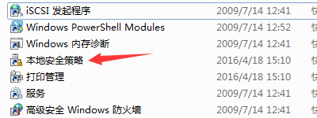
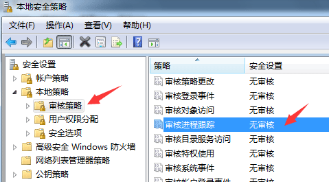
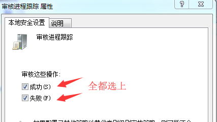
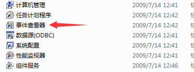
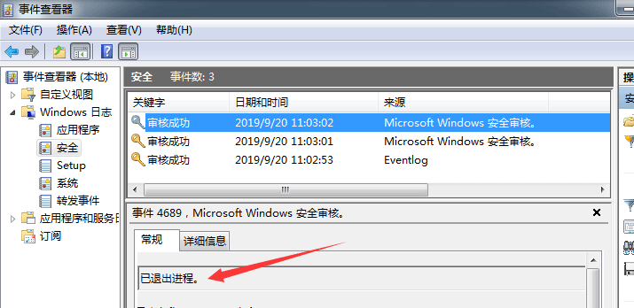
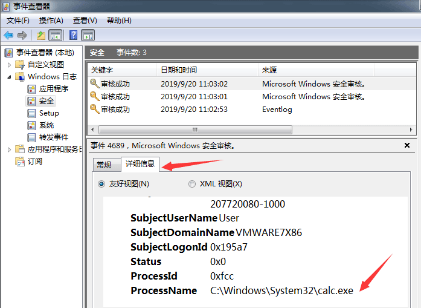
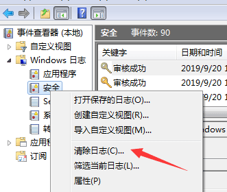

简介
某些情况下，我们写的进程监控模块，频繁的检测到某进程的退出和启动，然后频繁发出告警。
但是客户在任务管理器中，看到这个进程运行着呢，就会认为是我们写的代码有问题，所以这里我们
可以通过配置操作系统自带的审计功能，监控进程的启动和退出动作，来验证到底是谁出了问题。
配置方法
- 打开
控制面板然后打开管理工具项，找到本地安全策略

- 打开
本地安全策略中本地策略的审核策略进行审核进程跟踪配置
或者在运行中直接使用secpol.msc指令来打开本地安全策略项

- 在
审核进程跟踪中勾选成功和失败选项并确定

查看日志
- 同样是打开
控制面板中的管理工具项 找到事件查看器

- 打开
事件查看器中Windows日志里的安全项

- 选中一条审核记录，在下边的
详细信息中可以找到对应进程名

注意：只有在配置了策略以后才会开始记录进程动作，可以在配置前先 右键 选择清空一下无关的日志。
